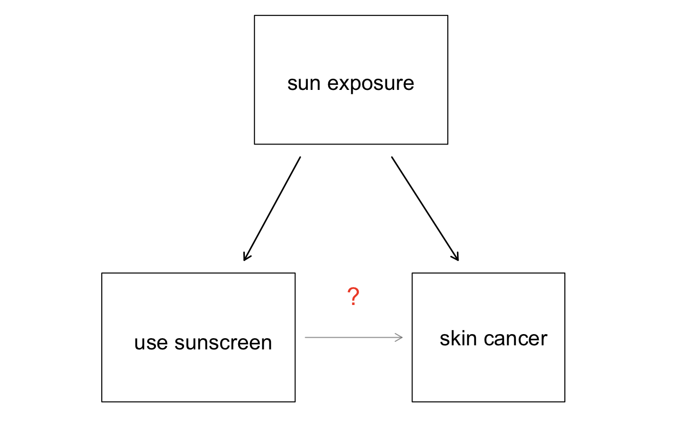

Chapter 1 Introduction to data
Though we were calculating probabilities in the 16th century, and the first US Census was directed by Thomas Jefferson in 17901, the discipline of statistics as we know it came about in the 1800s. Up until the 21st century, the statistical investigation process looked something like this (adapted from Tintle et al. (2016)):
- Ask a research question.
- Design a study and collect data.
- Summarize and visualize the data.
- Use statistical analysis methods to draw inferences from the data.
- Communicate the results and answer the research question.
- Revisit and look forward.
With the rise of data science, however, we may not start with a research question, and instead start with a data set2. In this case, the statistical investigation process looks more like the data exploration cycle found in Figure 1.1 taken from Wickham and Grolemund (2017).

Figure 1.1: Wickham and Grolemund’s data exploration cycle (2017).
In either case, the ideas, concepts, and methods presented in this book will provide you with the tools to work through the statistical investigation process, whether starting with a research question or starting with data.
1.1 Case study: using stents to prevent strokes
In this section, we introduce a classic challenge in statistics: evaluating the efficacy of a medical treatment. Terms in this section, and indeed much of this chapter, will all be revisited later in the text. The plan for now is simply to get a sense of the role statistics can play in practice.
Here, we will consider an experiment that studies effectiveness of stents in treating patients at risk of stroke (Chimowitz et al. 2011). Stents are small mesh tubes that are placed inside narrow or weak arteries to assist in patient recovery after cardiac events and reduce the risk of an additional heart attack or death.
Many doctors have hoped that there would be similar benefits for patients at risk of stroke. We start by writing the principal question the researchers hope to answer:
Does the use of stents reduce the risk of stroke?
The researchers who asked this question conducted an experiment with 451 at-risk patients. Each volunteer patient was randomly assigned to one of two groups:
- Treatment group. Patients in the treatment group received a stent and medical management. The medical management included medications, management of risk factors, and help in lifestyle modification.
- Control group. Patients in the control group received the same medical management as the treatment group, but they did not receive stents.
Researchers randomly assigned 224 patients to the treatment group and 227 to the control group. In this study, the control group provides a reference point against which we can measure the medical impact of stents in the treatment group.
Researchers studied the effect of stents at two time points: 30 days after enrollment and 365 days after enrollment.
The data collected on 5 of these patients are summarized in Table 1.1.
Patient outcomes are recorded as stroke or no event, representing whether or not the patient had a stroke during that time period.
| group | 30 days | 365 days | patient |
|---|---|---|---|
| treatment | no event | no event | 1 |
| treatment | stroke | stroke | 2 |
| treatment | no event | no event | 3 |
| treatment | no event | no event | 4 |
| control | no event | no event | 5 |
Considering data from each of the 451 patients individually would be a long, cumbersome path towards answering the original research question. Instead, performing a statistical data analysis allows us to consider all of the data at once. Table 1.2 summarizes the raw data in a more helpful way. In this table, we can quickly see what happened over the entire study. For instance, to identify the number of patients in the treatment group who had a stroke within 30 days after the treatment, we look in the leftmost column (30 days), at the intersection of treatment and stroke: 33. To identify the number of control patients who did not have a stroke after 365 days after receiving treatment, we look at the rightmost column (365 days), at the intersection of control and no event: 199.
| stroke | no event | stroke | no event | |
|---|---|---|---|---|
| treatment | 33 | 191 | 45 | 179 |
| control | 13 | 214 | 28 | 199 |
| Total | 46 | 405 | 73 | 378 |
The data summarized in this table can also be visualized with a barplot, seen in Figure 1.2:
Figure 1.2: Segmented barplot of outcomes in stent study by group and time.
We can compute summary statistics from the table to give us a better idea of how the impact of the stent treatment differed between the two groups. A summary statistic is a single number summarizing a large amount of data. For instance, the primary results of the study after 1 year could be described by two summary statistics: the proportion of people who had a stroke in the treatment and control groups.
- Proportion who had a stroke in the treatment (stent) group: \(45/224 = 0.20 = 20\%\).
- Proportion who had a stroke in the control group: \(28/227 = 0.12 = 12\%\).
These two summary statistics are useful in looking for differences in the groups, and we are in for a surprise: an additional 8% of patients in the treatment group had a stroke! This is important for two reasons. First, it is contrary to what doctors expected, which was that stents would reduce the rate of strokes. Second, it leads to a statistical question: do the data show a “real” difference between the groups?
This second question is subtle, and is the basis of what we call statistical inference. Suppose you flip a coin 100 times. While the chance a coin lands heads in any given coin flip is 50%, we probably won’t observe exactly 50 heads. This type of fluctuation is part of almost any type of data generating process. It is possible that the 8% difference in the stent study is due to this natural variation. However, the larger the difference we observe (for a particular sample size), the less believable it is that the difference is due to chance. So what we are really asking is the following: is the difference so large that we should reject the notion that it was due to chance?
While we don’t yet have our statistical tools to fully address this question on our own, we can comprehend the conclusions of the published analysis: there was compelling evidence of harm by stents in this study of stroke patients.
1.2 Data basics
Effective presentation and description of data is a first step in most analyses. This section introduces one structure for organizing data as well as some terminology that will be used throughout this book.
1.2.1 Observations, variables, and data frames
Here, we will consider loans offered through the Lending Club, a peer-to-peer lending company. Such data could be used to explore characteristics of people receiving loans from the platform, such as job titles, annual income, or home ownership. Table 1.3 displays six rows of a data set for 50 randomly sampled loans. These observations will be referred to as the loan50 data set.
loan50 data can be found in the openintro package.
Each row in the table represents a single loan. The formal name for a row is a case or observational unit. The columns represent characteristics of each loan, where each column is referred to as a variable.
For example, the first row represents a loan of $7,500 with an interest rate of 7.34%, where the borrower is based in Maryland (MD) and has an income of $70,000.
In practice, it is especially important to ask clarifying questions to ensure important aspects of the data are understood.
For instance, it is always important to be sure we know what each variable means and its units of measurement.
Descriptions of the variables in the loan50 data set are given in Table 1.4.
| loan_amount | interest_rate | term | grade | state | total_income | homeownership | |
|---|---|---|---|---|---|---|---|
| 1 | 22000 | 10.90 | 60 | B | NJ | 59000 | rent |
| 2 | 6000 | 9.92 | 36 | B | CA | 60000 | rent |
| 3 | 25000 | 26.30 | 36 | E | SC | 75000 | mortgage |
| 4 | 6000 | 9.92 | 36 | B | CA | 75000 | rent |
| 5 | 25000 | 9.43 | 60 | B | OH | 254000 | mortgage |
| 6 | 6400 | 9.92 | 36 | B | IN | 67000 | mortgage |
| variable | description |
|---|---|
| loan_amount | Amount of the loan received, in US dollars. |
| interest_rate | Interest rate on the loan, in an annual percentage. |
| term | The length of the loan, which is always set as a whole number of months. |
| grade | Loan grade, which takes a values A through G and represents the quality of the loan and its likelihood of being repaid. |
| state | US state where the borrower resides. |
| total_income | Borrower’s total income, including any second income, in US dollars. |
| homeownership | Indicates whether the person owns, owns but has a mortgage, or rents. |
The data in Table 1.3 represent a data frame (or data matrix), which is a convenient and common way to organize data, especially if collecting data in a spreadsheet. Each row of a data frame corresponds to a unique case (observational unit), and each column corresponds to a variable.
When recording data, use a data frame unless you have a very good reason to use a different structure. This structure allows new cases to be added as rows or new variables as new columns.
The data described in the Guided Practice above represent the county data set, which is shown as a data frame in Table 1.5. The variables as well as the variables in the data set that did not fit in Table 1.5 are described in Table 1.6
| name | state | pop2017 | pop_change | unemployment_rate | median_edu |
|---|---|---|---|---|---|
| Autauga County | Alabama | 55504 | 1.48 | 3.86 | some_college |
| Baldwin County | Alabama | 212628 | 9.19 | 3.99 | some_college |
| Barbour County | Alabama | 25270 | -6.22 | 5.90 | hs_diploma |
| Bibb County | Alabama | 22668 | 0.73 | 4.39 | hs_diploma |
| Blount County | Alabama | 58013 | 0.68 | 4.02 | hs_diploma |
| Bullock County | Alabama | 10309 | -2.28 | 4.93 | hs_diploma |
| variable | description |
|---|---|
| name | Name of county. |
| state | Name of state. |
| pop2000 | Population in 2000. |
| pop2010 | Population in 2010. |
| pop2017 | Population in 2017. |
| pop_change | Population change from 2010 to 2017. |
| poverty | Percent of population in poverty in 2017. |
| homeownership | Homeownership rate, 2006-2010. |
| multi_unit | Percent of housing units in multi-unit structures, 2006-2010. |
| unemployment_rate | Unemployment rate in 2017. |
| metro |
Whether the county contains a metropolitan area, taking one of the values yes or no.
|
| median_edu |
Median education level (2013-2017), taking one of the values below_hs, hs_diploma, some_college, or bachelors.
|
| per_capita_income | Per capita (per person) income (2013-2017). |
| median_hh_income | Median household income. |
| smoking_ban |
Describes whether the type of county-level smoking ban in place in 2010, taking one of the values none, partial, or comprehensive.
|
county data can be found in the openintro package.
1.2.2 Types of variables
Examine the unemployment_rate, pop2017, state, metro, and median_edu variables in the county data set.
Each of these variables is inherently different from the others, yet some share certain characteristics.
First consider unemployment_rate, which is said to be a quantitative or numerical variable since it can take a wide range of numerical values, and it is sensible to add, subtract, or take averages with those values.
On the other hand, we would not classify a variable reporting telephone area codes as quantitative since the average, sum, and difference of area codes doesn’t have any clear meaning.
The pop2017 variable is also quantitative, although it seems to be a little different than unemployment_rate.
This variable of the population count can only take whole non-negative numbers (0, 1, 2, …).
For this reason, the population variable is said to be discrete since it can only take numerical values with jumps.
On the other hand, the unemployment rate variable is said to be continuous.
The variable state can take up to 51 values after accounting for Washington, DC: AL, AK, …, and WY.
Because the responses themselves are categories, state is called a categorical variable, and the possible values are called the variable’s levels . The variable metro is also categorical, but it only has two levels (yes or no). A categorical variable with only two levels is called a binary variable.
Finally, consider the median_edu variable, which describes the median education level of county residents and takes values below_hs, hs_diploma, some_college, or bachelors in each county.
This variable seems to be a hybrid: it is a categorical variable but the levels have a natural ordering.
A variable with these properties is called an ordinal variable, while a regular categorical variable without this type of special ordering is called a nominal variable.
To simplify analyses, any ordinal variable in this book will be treated as a nominal (unordered) categorical variable.

Figure 1.3: Breakdown of variables into their respective types.
Data were collected about students in a statistics course. Three variables were recorded for each student: number of siblings, student height, and whether the student had previously taken a statistics course. Classify each of the variables as continuous quantitative, discrete quantitative, or categorical.
The number of siblings and student height represent quantitative variables. Because the number of siblings is a count, it is discrete. Height varies continuously, so it is a continuous quantitative variable. The last variable classifies students into two categories—those who have and those who have not taken a statistics course—which makes this variable categorical.
group variable is used to indicate the experiment group for each patient: treatment or control.
The num_migraines variable represents the number of migraines the patient experienced during a 3-month period. Classify each variable as either quantitative or categorical?7
1.2.3 Relationships between variables
Many analyses are motivated by a researcher looking for a relationship between two or more variables. A social scientist may like to answer some of the following questions:
Does a higher than average increase in county population tend to correspond to counties with higher or lower median household incomes?
If homeownership is lower than the national average in one county, will the percent of multi-unit structures in that county tend to be above or below the national average?
How useful a predictor is median education level for the median household income for US counties?
To answer these questions, data must be collected, such as the county data set shown in Table 1.5.
Examining summary statistics could provide insights for each of the three questions about counties.
Additionally, graphs can be used to visually explore the data.
Scatterplots are one type of graph used to study the relationship between two quantitative variables.
Figure 1.4 displays the relationship between the variables homeownership and multi_unit, which is the percent of units in multi-unit structures (e.g., apartments, condos).
Each point on the plot represents a single county (a single observational unit).
For instance, the highlighted dot corresponds to County 413 in the county data set: Chattahoochee County, Georgia, which has 39.4% of units in multi-unit structures and a homeownership rate of 31.3%.
The scatterplot suggests a relationship between the two variables: counties with a higher rate of multi-units tend to have lower homeownership rates.
We might brainstorm as to why this relationship exists and investigate each idea to determine which are the most reasonable explanations.
Figure 1.4: A scatterplot of homeownership versus the percent of units that are in multi-unit structures for US counties. The highlighted dot represents Chattahoochee County, Georgia, which has a multi-unit rate of 39.4% and a homeownership rate of 31.3%.
The multi-unit and homeownership rates are said to be associated because the plot shows a discernible pattern. When two variables show some connection with one another, they are called associated variables. Associated variables can also be called dependent variables and vice-versa.
loan50 data set, which are described in Table 1.4.
Create two questions about possible relationships between variables in loan50 that are of interest to you.8
This example examines the relationship between the change in population from 2010 to 2017 and median household income for counties, which is visualized as a scatterplot in Figure 1.5. Are these variables associated?
The larger the median household income for a county, the higher the population growth observed for the county. While this trend isn’t true for every county, the trend in the plot is evident. Since there is some relationship between the variables, they are associated.
Figure 1.5: A scatterplot showing pop_change against median_hh_income. Owsley County of Kentucky, is highlighted, which lost 3.63% of its population from 2010 to 2017 and had median household income of $22,736.
Because there is a downward trend in Figure 1.4—counties with more units in multi-unit structures are associated with lower homeownership—these variables are said to be negatively associated.
A positive association is shown in the relationship between the median_hh_income and pop_change variables in Figure 1.5, where counties with higher median household income tend to have higher rates of population growth.
If two variables are not associated, then they are said to be independent. That is, two variables are independent if there is no evident relationship between the two.
1.2.4 Explanatory and response variables
When we ask questions about the relationship between two variables, we sometimes also want to determine if the change in one variable causes a change in the other.
Consider the following rephrasing of an earlier question bout the county data set:
If there is an increase in the median household income in a county, does this drive an increase in its population?
In this question, we are asking whether one variable affects another. If this is our underlying belief, then median household income is the explanatory variable variable and the population change is the response variable variable in the hypothesized relationship.9
Explanatory and response variables. When we suspect one variable might causally affect another, we label the first variable the explanatory variable and the second the response variable.
For many pairs of variables, there is no hypothesized relationship, and these labels would not be applied to either variable in such cases.
Bear in mind that the act of labeling the variables in this way does nothing to guarantee that a causal relationship exists. A formal evaluation to check whether one variable causes a change in another requires an experiment.
1.2.5 Introducing observational studies and experiments
There are two primary types of data collection: observational studies and experiments. We already encountered an experiment in the case study in Section 1.1, and an observational study with the Lending Club data in this section.
Researchers perform an observational study when they collect data in a way that does not directly interfere with how the data arise. For instance, researchers may collect information via surveys, review medical or company records, or follow a cohort of many similar individuals to form hypotheses about why certain diseases might develop. In each of these situations, researchers merely observe the data that arise. In general, observational studies can provide evidence of a naturally occurring association between variables, but they cannot by themselves show a causal connection.
When researchers want to investigate the possibility of a causal connection, they conduct an experiment. Usually there will be both an explanatory and a response variable. For instance, we may suspect administering a drug will reduce mortality in heart attack patients over the following year. To check if there really is a causal connection between the explanatory variable and the response, researchers will collect a sample of individuals and split them into groups. The individuals in each group are assigned a treatment. When individuals are randomly assigned to a group, the experiment is called a randomized experiment. For example, each heart attack patient in the drug trial could be randomly assigned, perhaps by flipping a coin, into one of two groups: the first group receives a placebo (fake treatment) and the second group receives the drug. Note that the case study in Section 1.1 did not use a placebo.
1.3 Sampling principles and strategies
The first step in conducting research is to identify topics or questions that are to be investigated. A clearly laid out research question is helpful in identifying what subjects or cases should be studied and what variables are important. It is also important to consider how data are collected so that they are reliable and help achieve the research goals.
1.3.1 Populations and samples
Consider the following three research questions:
- What is the average mercury content in swordfish in the Atlantic Ocean?
- Over the last 5 years, what is the average time to complete a degree for Duke undergrads?
- Does a new drug reduce the risk deaths in patients with severe heart disease?
Each research question refers to a target population. In the first question, the target population is all swordfish in the Atlantic ocean, and each fish represents a case. Often times, it is too expensive to collect data for every case in a population. Instead, a sample is taken. A sample represents a subset of the cases and is often a small fraction of the population. For instance, 60 swordfish (or some other number) in the population might be selected, and this sample data may be used to provide an estimate of the population average and answer the research question.
1.3.2 Anecdotal evidence
Consider the following possible responses to the three research questions:
- A man on the news got mercury poisoning from eating swordfish, so the average mercury concentration in swordfish must be dangerously high.
- I met two students who took more than 7 years to graduate from Duke, so it must take longer to graduate at Duke than at many other colleges.
- My friend’s dad had a heart attack and died after they gave him a new heart disease drug, so the drug must not work.
Each conclusion is based on data. However, there are two problems. First, the data only represent one or two cases. Second, and more importantly, it is unclear whether these cases are actually representative of the population. Data collected in this haphazard fashion are called anecdotal evidence.

Figure 1.6: In February 2010, some media pundits cited one large snow storm as evidence against global warming. As comedian Jon Stewart pointed out, “It is one storm, in one region, of one country.”
Anecdotal evidence typically is composed of unusual cases that we recall based on their striking characteristics. For instance, we are more likely to remember the two people we met who took 7 years to graduate than the six others who graduated in four years. Instead of looking at the most unusual cases, we should examine a sample of many cases that better represent the population.
1.3.3 Sampling from a population
We might try to estimate the time to graduation for Duke undergraduates in the last 5 years by collecting a sample of students. All graduates in the last 5 years represent the population, and graduates who are selected for review are collectively called the sample. In general, we always seek to randomly select a sample from a population. The most basic type of random selection is equivalent to how raffles are conducted–where each raffle ticket has an equal chance of being selected. For example, in selecting graduates, we could write each graduate’s name on a raffle ticket and draw 100 tickets. The selected names would represent a random sample of 100 graduates. We pick samples randomly to reduce the chance we introduce biases.
Figure 1.7: In this graphic, five graduates are randomly selected from the population (all graduates in the last 5 years) to be included in the sample.
Suppose we ask a student who happens to be majoring in nutrition to select several graduates for the study. What kind of students do you think they might collect? Do you think their sample would be representative of all graduates?
Perhaps they would pick a disproportionate number of graduates from health-related fields. Or perhaps their selection would be a good representation of the population. When selecting samples by hand, we run the risk of picking a biased sample, even if our bias is unintended.
Figure 1.8: Asked to pick a sample of graduates, a nutrition major might inadvertently pick a disproportionate number of graduates from health-related majors.
If someone was permitted to pick and choose exactly which graduates were included in the sample, it is entirely possible that the sample could be skewed to that person’s interests, which may be entirely unintentional. This introduces bias into a sampling method.
There are three common types of sampling bias we will discuss:
- Selection bias: the method in how your sample is selected tends to produce samples that either over-represent or under-represent certain portions of the population.
- Non-response bias: individuals selected for the sample are unwilling or cannot respond.
- Response bias: individuals selected for the sample respond in a way that does not accurately represent the truth—due to question wording, lack of anonymity, or other issues.
A common downfall in survey studies is a convenience sample, where individuals who are easily accessible are more likely to be included in the sample. For instance, if a political survey is done by stopping people walking in the Bronx, this will not represent all of New York City. It is often difficult to discern what sub-population a convenience sample represents.
Sampling randomly helps resolve selection bias. The most basic random sample is called a simple random sample, and is equivalent to using a raffle to select cases. This means that each case in the population has an equal chance of being included and there is no implied connection between the cases in the sample.
Even when people are picked at random, however, caution must be exercised if the non-response rate is high, or if response bias is present. For instance, if only 30% of the people randomly sampled for a survey actually respond, then it is unclear whether the results are representative of the entire population. This non-response bias can produce results in the sample that do not accurately reflect the entire population.
Figure 1.9: Due to the possibility of non-response, survey studies may only reach a certain group within the population. It is difficult, and often times impossible, to completely fix this problem.
1.3.4 Four sampling methods (special topic)
Almost all statistical methods are based on the notion of implied randomness. If observational data are not collected in a random framework from a population, these statistical methods—the estimates and errors associated with the estimates—are not reliable. Here we consider four random sampling techniques: simple, stratified, cluster, and multistage sampling. Figures 1.10 and 1.11 provide graphical representations of these techniques.
Figure 1.10: Examples of simple random and stratified sampling. In the top panel, simple random sampling was used to randomly select the 18 cases (denoted in red). In the bottom panel, stratified sampling was used: cases were grouped into strata, then simple random sampling was employed to randomly select 3 cases within each stratum.
Simple random sampling is probably the most intuitive form of random sampling. Consider the salaries of Major League Baseball (MLB) players, where each player is a member of one of the league’s 30 teams. To take a simple random sample of 120 baseball players and their salaries, we could write the names of that season’s several hundreds of players onto slips of paper, drop the slips into a bucket, shake the bucket around until we are sure the names are all mixed up, then draw out slips until we have the sample of 120 players. In general, a sample is referred to as “simple random” if each case in the population has an equal chance of being included in the final sample and knowing that a case is included in a sample does not provide useful information about which other cases are included.
Stratified sampling is a divide-and-conquer sampling strategy. The population is divided into groups called strata. The strata are chosen so that similar cases are grouped together, then a second sampling method, usually simple random sampling, is employed within each stratum. In the baseball salary example, each of the 30 teams could represent a strata, since some teams have a lot more money (up to 4 times as much!). Then we might randomly sample 4 players from each team for our sample of 120 players.
Stratified sampling is especially useful when the cases in each stratum are very similar with respect to the outcome of interest. The downside is that analyzing data from a stratified sample is a more complex task than analyzing data from a simple random sample. The analysis methods introduced in this book would need to be extended to analyze data collected using stratified sampling.
Why would it be good for cases within each stratum to be very similar?
We might get a more stable estimate for the subpopulation in a stratum if the cases are very similar, leading to more precise estimates within each group. When we combine these estimates into a single estimate for the full population, that population estimate will tend to be more precise since each individual group estimate is itself more precise.
In a cluster sample, we break up the population into many groups, called clusters. Then we sample a fixed number of clusters and include all observations from each of those clusters in the sample. A multistage sample is like a cluster sample, but rather than keeping all observations in each cluster, we would collect a random sample within each selected cluster.

Figure 1.11: Examples of cluster and multistage sampling. In the top panel, cluster sampling was used: data were binned into nine clusters, three of these clusters were sampled, and all observations within these three cluster were included in the sample. In the bottom panel, multistage sampling was used, which differs from cluster sampling only in that we randomly select a subset of each cluster to be included in the sample rather than measuring every case in each sampled cluster.
Sometimes cluster or multistage sampling can be more economical than the alternative sampling techniques. Also, unlike stratified sampling, these approaches are most helpful when there is a lot of case-to-case variability within a cluster but the clusters themselves don’t look very different from one another. For example, if neighborhoods represented clusters, then cluster or multistage sampling work best when the neighborhoods are very diverse. A~downside of these methods is that more advanced techniques are typically required to analyze the data, though the methods in this book can be extended to handle such data.
Suppose we are interested in estimating the malaria rate in a densely tropical portion of rural Indonesia. We learn that there are 30 villages in that part of the Indonesian jungle, each more or less similar to the next, but the distances between the villages is substantial. Our goal is to test 150 individuals for malaria. What sampling method should be employed?
A simple random sample would likely draw individuals from all 30 villages, which could make data collection extremely expensive. Stratified sampling would be a challenge since it is unclear how we would build strata of similar individuals. However, cluster sampling or multistage sampling seem like very good ideas. If we decided to use multistage sampling, we might randomly select half of the villages, then randomly select 10 people from each. This would probably reduce our data collection costs substantially in comparison to a simple random sample, and the cluster sample would still give us reliable information, even if we would need to analyze the data with slightly more advanced methods than we discuss in this book.
1.4 Observational studies
Data where no treatment has been explicitly applied (or explicitly withheld) is called observational data. For instance, the loan data and county data described in Section 1.2 are both examples of observational data.
O bservational studies are generally only sufficient to show associations or form hypotheses that can be later checked with experiments. Making causal conclusions based on experiments is often reasonable. However, making the same causal conclusions based on observational data can be treacherous and is not recommended. Indeed, making causal conclusions based on observational data is arguably the most common mistake in our news headlines and social media posts!
Some previous research tells us that using sunscreen actually reduces skin cancer risk, so maybe there is another variable that can explain this hypothetical association between sunscreen usage and skin cancer. One important piece of information that is absent is sun exposure. If someone is out in the sun all day, they are more likely to use sunscreen and more likely to get skin cancer. Exposure to the sun is unaccounted for in the simple investigation.

Sun exposure is what is called a confounding variable14, which is a variable that is associated with both the explanatory and response variables. While one method to justify making causal conclusions from observational studies is to exhaust the search for confounding variables, there is no guarantee that all confounding variables can be examined or measured.
A confounding variable is a variable that is both
- associated with the explanatory variable, and
- associated with the response variable.
Observational studies come in two forms: prospective and retrospective studies. A prospective study identifies individuals and collects information as events unfold. For instance, medical researchers may identify and follow a group of patients over many years to assess the possible influences of behavior on cancer risk. One example of such a study is The Nurses’ Health Study. Started in 1976 and expanded in 1989, the Nurses’ Health Study has collected data on over 275,000 nurses and is still enrolling participants. This prospective study recruits registered nurses and then collects data from them using questionnaires. Retrospective studies collect data after events have taken place, e.g. researchers may review past events in medical records. Some data sets may contain both prospectively- and retrospectively-collected variables, such as medical studies which gather information on participants’ lives before they enter the study and subsequently collect data on participants throughout the study.
1.5 Experiments
Studies where the researchers assign treatments to cases are called experiments. When this assignment includes randomization, e.g., using a coin flip to decide which treatment a patient receives, it is called a randomized experiment. Randomized experiments are fundamentally important when trying to show a causal connection between two variables.
1.5.1 Principles of experimental design
Controlling. Researchers assign treatments to cases, and they do their best to control any other differences in the groups17.
For example, when patients take a drug in pill form, some patients take the pill with only a sip of water while others may have it with an entire glass of water. To control for the effect of water consumption, a doctor may instruct every patient to drink a 12 ounce glass of water with the pill.Randomization. Researchers randomize patients into treatment groups to account for variables that cannot be controlled. For example, some patients may be more susceptible to a disease than others due to their dietary habits. Randomizing patients into the treatment or control group helps even out such differences, and it also prevents accidental bias from entering the study.
Replication. The more cases researchers observe, the more accurately they can estimate the effect of the explanatory variable on the response. In a single study, we replicate by collecting a sufficiently large sample. Alternatively, a group of scientists may replicate an entire study to verify an earlier finding.
Randomized experiments are generally built on four principles:
- Blocking. Researchers sometimes know or suspect that variables, other than the treatment, influence the response. Under these circumstances, they may first group individuals based on this variable into blocks and then randomize cases within each block to the treatment groups. This strategy is often referred to as blocking. For instance, if we are looking at the effect of a drug on heart attacks, we might first split patients in the study into low-risk and high-risk blocks, then randomly assign half the patients from each block to the control group and the other half to the treatment group, as shown in Figure 1.12. This strategy ensures each treatment group has an equal number of low-risk and high-risk patients.
Figure 1.12: Blocking using a variable depicting patient risk. Patients are first divided into low-risk and high-risk blocks, then each block is evenly separated into the treatment groups using randomization. This strategy ensures an equal representation of patients in each treatment group from both the low-risk and high-risk categories.
It is important to incorporate the first three experimental design principles into any study, and this book describes applicable methods for analyzing data from such experiments. Blocking is a slightly more advanced technique, and statistical methods in this book may be extended to analyze data collected using blocking.
1.5.2 Reducing bias in human experiments
Randomized experiments have long been considered to be the gold standard for data collection, but they do not ensure an unbiased perspective into the cause and effect relationship in all cases. Human studies are perfect examples where bias can unintentionally arise. Here we reconsider a study where a new drug was used to treat heart attack patients. In particular, researchers wanted to know if the drug reduced deaths in patients.
These researchers designed a randomized experiment because they wanted to draw causal conclusions about the drug’s effect. Study volunteers18 were randomly placed into two study groups. One group, the treatment group, received the drug. The other group, called the control group, did not receive any drug treatment.
Put yourself in the place of a person in the study. If you are in the treatment group, you are given a fancy new drug that you anticipate will help you. On the other hand, a person in the other group doesn’t receive the drug and sits idly, hoping her participation doesn’t increase her risk of death. These perspectives suggest there are actually two effects in this study: the one of interest is the effectiveness of the drug, and the second is an emotional effect to (not) taking the drug, which is difficult to quantify.
Researchers aren’t usually interested in the emotional effect, which might bias the study. To circumvent this problem, researchers do not want patients to know which group they are in. When researchers keep the patients uninformed about their treatment, the study is said to be blind. But there is one problem: if a patient doesn’t receive a treatment, they will know they’re in the control group. The solution to this problem is to give fake treatments to patients in the control group. A fake treatment is called a placebo, and an effective placebo is the key to making a study truly blind. A classic example of a placebo is a sugar pill that is made to look like the actual treatment pill. Often times, a placebo results in a slight but real improvement in patients. This effect has been dubbed the placebo effect.
The patients are not the only ones who should be blinded: doctors and researchers can accidentally bias a study. When a doctor knows a patient has been given the real treatment, they might inadvertently give that patient more attention or care than a patient that they know is on the placebo. To guard against this bias, which again has been found to have a measurable effect in some instances, most modern studies employ a double-blind setup where doctors or researchers who interact with patients are, just like the patients, unaware of who is or is not receiving the treatment.19
You may have many questions about the ethics of sham surgeries to create a placebo. These questions may have even arisen in your mind when in the general experiment context, where a possibly helpful treatment was withheld from individuals in the control group; the main difference is that a sham surgery tends to create additional risk, while withholding a treatment only maintains a person’s risk.
There are always multiple viewpoints of experiments and placebos, and rarely is it obvious which is ethically “correct”. For instance, is it ethical to use a sham surgery when it creates a risk to the patient? However, if we don’t use sham surgeries, we may promote the use of a costly treatment that has no real effect; if this happens, money and other resources will be diverted away from other treatments that are known to be helpful. Ultimately, this is a difficult situation where we cannot perfectly protect both the patients who have volunteered for the study and the patients who may benefit (or not) from the treatment in the future.
1.6 Scope of inference
When statisticians refer to the scope of inference of a study, we are asking two questions:
- Generalizability: To which population can we generalize these results?
- Causation: Do these results provide evidence for a causal relationship?
The answer to the first question is determined by the sampling method—if we selected our sample randomly, and there are no other sources of sampling bias, then we can reasonably generalize to the population from which the sample was taken. The answer to the second question is determined by the type of study—if the study is a randomized experiment, then it can investigate whether changes in the explanatory variable caused changes in the response variable; in an observational study, one can only investigate associations between the variables. We summarize how to determine a study’s scope of inference in Figure 1.13.

Figure 1.13: Determining scope of inference of a study.
1.7 Data in R
R is a powerful and open source software tool for working with data.
Throughout this text, we provide some guidance on how to use R within the
context of the statistical content that is being covered.
As educators, we see the value of teaching with modern software to
empower students to take optimal advantage of the concepts they are learning.
However, we understand the limitations of some educational structures, and we
know that not every classroom will be able to implement R alongside the
statistical concepts. Generally, we will present the R techniques at the end
of each chapter. There are times in the text when the concepts are not
distinguishable from the software, and in those cases, we have have provided the
R code within the main body of the chapter.
We start with an introduction to R, focused on how data sets are structured in
R and how the user can work with a data object in R.
1.7.1 Dataframes in R
Throughout the text, we will work with many different data sets. Some data sets
are pre-loaded into R, some get loaded through R packages, and some data sets
will be created by the student. data sets can be viewed through the RStudio
environment, but the data can also be investigated through the notebook features
of an RMarkdown file.
Consider the data that was described previously in this chapter.
We can use the glimpse() function to see the variables included in the data set
and their data type. Or, we could use the head() function to see the first
few rows of the data set.
data(email50)
glimpse(email50)
#> Rows: 50
#> Columns: 21
#> $ spam <dbl> 0, 0, 1, 0, 0, 0, 0, 0, 0, 0, 0, 0, 1, 1, 0, 0, 0, 1, 0,…
#> $ to_multiple <dbl> 0, 0, 0, 0, 0, 0, 0, 0, 0, 0, 0, 0, 0, 1, 0, 0, 0, 0, 0,…
#> $ from <dbl> 1, 1, 1, 1, 1, 1, 1, 1, 1, 1, 1, 1, 1, 1, 1, 1, 1, 1, 1,…
#> $ cc <int> 0, 0, 4, 0, 0, 0, 0, 0, 1, 0, 0, 0, 0, 0, 0, 0, 0, 0, 1,…
#> $ sent_email <dbl> 1, 0, 0, 0, 0, 0, 0, 1, 1, 0, 0, 0, 0, 0, 0, 1, 1, 0, 1,…
#> $ time <dttm> 2012-01-04 06:19:16, 2012-02-16 13:10:06, 2012-01-04 08…
#> $ image <dbl> 0, 0, 0, 0, 0, 0, 0, 0, 0, 0, 0, 0, 0, 0, 0, 0, 0, 0, 0,…
#> $ attach <dbl> 0, 0, 2, 0, 0, 0, 0, 0, 0, 0, 0, 0, 0, 2, 0, 0, 0, 1, 0,…
#> $ dollar <dbl> 0, 0, 0, 0, 9, 0, 0, 0, 0, 23, 4, 0, 3, 2, 0, 0, 0, 0, 0…
#> $ winner <fct> no, no, no, no, no, no, no, no, no, no, no, no, yes, no,…
#> $ inherit <dbl> 0, 0, 0, 0, 0, 0, 0, 0, 0, 0, 0, 0, 0, 0, 0, 0, 0, 0, 0,…
#> $ viagra <dbl> 0, 0, 0, 0, 0, 0, 0, 0, 0, 0, 0, 0, 0, 0, 0, 0, 0, 0, 0,…
#> $ password <dbl> 0, 0, 0, 0, 1, 0, 0, 0, 0, 0, 0, 2, 0, 0, 0, 0, 0, 0, 8,…
#> $ num_char <dbl> 21.705, 7.011, 0.631, 2.454, 41.623, 0.057, 0.809, 5.229…
#> $ line_breaks <int> 551, 183, 28, 61, 1088, 5, 17, 88, 242, 578, 1167, 198, …
#> $ format <dbl> 1, 1, 0, 0, 1, 0, 0, 1, 1, 1, 1, 1, 1, 0, 1, 1, 1, 0, 1,…
#> $ re_subj <dbl> 1, 0, 0, 0, 0, 0, 0, 1, 1, 0, 0, 0, 0, 0, 0, 1, 1, 0, 0,…
#> $ exclaim_subj <dbl> 0, 0, 0, 0, 0, 0, 0, 0, 1, 0, 0, 0, 0, 0, 0, 0, 0, 0, 0,…
#> $ urgent_subj <dbl> 0, 0, 0, 0, 0, 0, 0, 0, 0, 0, 0, 0, 0, 0, 0, 0, 0, 0, 0,…
#> $ exclaim_mess <dbl> 8, 1, 2, 1, 43, 0, 0, 2, 22, 3, 13, 1, 2, 2, 21, 10, 0, …
#> $ number <fct> small, big, none, small, small, small, small, small, sma…head(email50)
#> # A tibble: 6 x 21
#> spam to_multiple from cc sent_email time image attach
#> <dbl> <dbl> <dbl> <int> <dbl> <dttm> <dbl> <dbl>
#> 1 0 0 1 0 1 2012-01-04 06:19:16 0 0
#> 2 0 0 1 0 0 2012-02-16 13:10:06 0 0
#> 3 1 0 1 4 0 2012-01-04 08:36:23 0 2
#> 4 0 0 1 0 0 2012-01-04 10:49:52 0 0
#> 5 0 0 1 0 0 2012-01-27 02:34:45 0 0
#> 6 0 0 1 0 0 2012-01-17 10:31:57 0 0
#> # … with 13 more variables: dollar <dbl>, winner <fct>, inherit <dbl>,
#> # viagra <dbl>, password <dbl>, num_char <dbl>, line_breaks <int>,
#> # format <dbl>, re_subj <dbl>, exclaim_subj <dbl>, urgent_subj <dbl>,
#> # exclaim_mess <dbl>, number <fct>Sometimes it is necessary to extract a column or a row from a data set.
In R, the $ operator can be used to extract a column from a data set.
For example, data$variable would extract the variable column from the data dataframe.
When extracted, these columns can be thought of as vectors. With these vectors, if you desired to pull off a specific entry, you could use square brackets ([ ]), with the index (number) of the entry you wish to extract in the brackets.
For example, data$variable[2] would extract the second entry (row) of the variable column.
Because a dataframe can be (roughly) thought of as a set of many different vectors, you can extract rows and columns from a dataframe using familiar matrix notation (e.g. [row, column].
For example data[i,j] will extract the \((i,j)^{th}\) entry of data, data[i, ] will extract the \(i^{th}\) row, and data[ , j] will extract the \(j^{th}\) column. Notice, when extracting an entire row (or column), you do not need to specify the columns (or rows) you would like, which is why the second entry does not contain a number.
email50$num_char
#> [1] 21.705 7.011 0.631 2.454 41.623 0.057 0.809 5.229 9.277 17.170
#> [11] 64.401 10.368 42.793 0.451 29.233 9.794 2.139 0.130 4.945 11.533
#> [21] 5.682 6.768 0.086 3.070 26.520 26.255 5.259 2.780 5.864 9.928
#> [31] 25.209 6.563 24.599 25.757 0.409 11.223 3.778 1.493 10.613 0.493
#> [41] 4.415 14.156 9.491 24.837 0.684 13.502 2.789 1.169 8.937 15.829
email50[47,3]
#> # A tibble: 1 x 1
#> from
#> <dbl>
#> 1 1| spam | to_multiple | from | cc | sent_email | time | image | attach | dollar | winner | inherit | viagra | password | num_char | line_breaks | format | re_subj | exclaim_subj | urgent_subj | exclaim_mess | number |
|---|---|---|---|---|---|---|---|---|---|---|---|---|---|---|---|---|---|---|---|---|
| 0 | 1 | 1 | 2 | 0 | 2012-01-02 14:24:21 | 0 | 0 | 0 | no | 0 | 0 | 0 | 8.72 | 185 | 0 | 1 | 0 | 0 | 3 | small |
1.7.2 Tidy structure of data
For plotting, analyses, model building, etc., the data should be structured according to certain principles.
Hadley Wickham provides a thorough discussion and advice for cleaning up the data in Wickham and others (2014).
- Tidy data: rows (cases/observational units) and columns (variables).
The key is that every row is a case and every column is a variable.
No exceptions. - Creating tidy data is often not trivial.
Within R (really within any type of computing language, Python, SQL, Java, etc.), it is important to understand how to build data using the patterns of the language.
Some things to consider:
object_name <- anythingis a way of assigninganythingto the newobject_name.object_name <- function_name(data_table, arguments)is a way of using a function to create a new object.object_name <- data_table %>% function_name(arguments)uses chaining syntax as an extension of the ideas of functions.
In chaining, the value on the left side of%>%becomes the first argument to the function on the right side.
object_name <- data_table %>%
function_name(arguments) %>%
another_function_name(other_arguments)is extended chaining. %>% is never at the front of the line, it is always connecting one idea with the continuation of that idea on the next line.
* In R, all functions take arguments in round parentheses (as opposed to subsetting observations or variables from data objects which happen with square parentheses). Additionally, the spot to the left of %>% is always a data table.
* The pipe syntax should be read as then, %>%.
1.7.3 Using the pipe to chain
The pipe syntax (%>%) takes a data frame (or data table) and sends it to the argument of a function. The mapping goes to the first available argument in the function.
For example:
x %>% f(y) is the same as f(x, y)
y %>% f(x, ., z) is the same as f(x,y,z)
Pipes are used commonly with functions in the dplyr package (see R examples in Chapter 2) and they allow us to sequentially build data wrangling operations.
We’ll start with short pipes and throughout the course build up to longer pipes that perform multiple operations.
Consider the data, High School and Beyond survey.
Two hundred observations were randomly sampled from the High School and Beyond survey, a survey conducted on high school seniors by the National Center of Education Statistics.
Of interest is the proportion of students at each of the two types of school, public and privaate.
We use the table command to tabulate how many of each type of school are in the data set. Notice that the same result is produced by the $ command with table and the chaining syntax done with %>%.
data(hsb2)
table(hsb2$schtyp)
#>
#> public private
#> 168 32hsb2 %>%
select(schtyp) %>%
table()
#> .
#> public private
#> 168 32What if we are interested only in public schools?
First, we should take note of another piece of R syntax: the double equal sign.
This is the logical test for “is equal to”.
In other words, we first determine if school type is equal to public for each of the observations in the data set and filter for those where this is true.
# Filter for public schools
hsb2_public <- hsb2 %>%
filter(schtyp == "public")We can read this as: “take the hsb2 data frame and pipe it into the filter function. Filter the data for cases where school type is equal to public. Then, assign the resulting data frame to a new object called hsb2 underscore public.”
Suppose we are not interested in the actual reading score of students, but instead whether their reading score is below average or at or above average. First, we need to calculate the average reading score with the mean function. This will give us the mean value, 52.23. However, in order to be able to refer back to this value later on, we might want to store it as an object that we can refer to by name.
# Calculate average reading score and show the value
mean(hsb2$read)
#> [1] 52.2So instead of just printing the result, let’s save it as a new object called avg_read.
# Calculate average reading score and store as avg_read
avg_read <- mean(hsb2$read)Before we more on, a quick tip: most often you’ll want to do both; see the value and also store it for later use. The approach we used here, running the mean function twice, is redundant.
Instead, you can simply wrap your assignment code in parentheses so that R will not only assign the average value of reading test scores to avg read, but it will also print out its value.
# Do both
(avg_read <- mean(hsb2$read))
#> [1] 52.2Next we need to determine whether each student is below or at or above average. For example, a reading score of 57 is above average, so is 68, but 44 is below. Obviously, going through each record like this would be tedious and error prone.
Instead we can create this new variable with the mutate function from the dplyr package.
We start with the data frame, hsb2, and pipe it into mutate, to create a new variable called read_cat (cat for categorical).
Note that we are using a new variable name here in order to not overwrite the existing reading score variable.
The new variable read_cat will be a column in the existing data frame hsb2.
To indicate that the mutate function came from the dplyr package, we use the pacakge::function syntax.
It is not usually necessary to provide the package name (unless there is ambiguity about where the function came from).
hsb2 <- hsb2 %>% dplyr::mutate(read_cat = ifelse(read < avg_read,
"below average", "at or above average"))The decision criteria for this new variable is based on a TRUE/FALSE question: if the reading score of the student is below the average reading score, label “below average”, otherwise, label “at or above average”.
This can be accomplished using the ifelse function in R.
The first argument of the function is the logical test.
The second argument is what to do if the result of the logical test is TRUE, in other words, if the student’s score is below the average score, and the last argument is what to do if the result is FALSE.
The ifelse function can be used for more complicated discretization rules as well, by nesting many ifelse statements within each other.
This is not necessary for this example, but it will come up later in the course.
1.8 Chapter review
1.8.1 Terms
We introduced the following terms in the chapter. If you’re not sure what some of these terms mean, we recommend you go back in the text and review their definitions. We are purposefully presenting them in alphabetical order, instead of in order of appearance, so they will be a little more challenging to locate. However you should be able to easily spot them as bolded text.
| anecdotal evidence | convenience sample | observational data | retrospective study |
| associated | data | observational study | sample |
| barplot | data frame | observational unit | sample bias |
| binary | dependent | ordinal | sampling bias |
| blind | discrete | placebo | selection bias |
| blocking | double-blind | placebo effect | simple random sample |
| case | experiment | population | simple random sampling |
| categorical | explanatory variable | positive association | statistical investigation process |
| cluster | independent | prospective study | strata |
| cluster sampling | level | quantitative | stratified sampling |
| cohort | multistage sample | randomized experiment | summary statistic |
| confounding variable | negative association | replicate | treatment group |
| continuous | nominal | representative | variable |
| control | non-response bias | response bias | |
| control group | non-response rate | response variable |
References
Chimowitz, Marc I, Michael J Lynn, Colin P Derdeyn, Tanya N Turan, David Fiorella, Bethany F Lane, L Scott Janis, et al. 2011. “Stenting Versus Aggressive Medical Therapy for Intracranial Arterial Stenosis.” New England Journal of Medicine 365 (11): 993–1003. http://www.nejm.org/doi/full/10.1056/NEJMoa1105335.
Tintle, Nathan L, Beth L Chance, George W Cobb, Allan J Rossman, Soma Roy, Todd M Swanson, and Jill L VanderStoep. 2016. Introduction to Statistical Investigations. 1st ed. Wiley.
Wickham, Hadley, and Garrett Grolemund. 2017. R for Data Science. O’Reilly Media.
Wickham, Hadley, and others. 2014. “Tidy Data.” Journal of Statistical Software 59 (10): 1–23.
https://www.census.gov/history/www/through_the_decades/overview/1790.html↩︎
Data used in this context are called “found data.”↩︎
The proportion of the 224 patients who had a stroke within 365 days: \(45/224 = 0.20\).↩︎
The loan’s grade is B, and the borrower rents their residence.↩︎
There are multiple strategies that can be followed. One common strategy is to have each student represented by a row, and then add a column for each assignment, quiz, or exam. Under this setup, it is easy to review a single line to understand the grade history of a student. There should also be columns to include student information, such as one column to list student names.↩︎
Each county may be viewed as a case, and there are eleven pieces of information recorded for each case. A table with 3,142 rows and 14 columns could hold these data, where each row represents a county and each column represents a particular piece of information.↩︎
The
groupvariable can take just one of two group names, making it categorical. Thenum_migrainesvariable describes a count of the number of migraines, which is an outcome where basic arithmetic is sensible, which means this is numerical outcome; more specifically, since it represents a count,num_migrainesis a discrete quantitative variable.↩︎Two example questions: (1) What is the relationship between loan amount and total income? (2) If someone’s income is above the average, will their interest rate tend to be above or below the average?↩︎
Sometimes the explanatory variable is called the independent variable and the response variable is called the dependent variable. However, this becomes confusing since a pair of variables might be independent or dependent, so we avoid this language.↩︎
The question “Over the last 5 years, what is the average time to complete a degree for Duke undergrads?” is only relevant to students who complete their degree; the average cannot be computed using a student who never finished her degree. Thus, only Duke undergrads who graduated in the last five years represent cases in the population under consideration. Each such student is an individual case. For the question “Does a new drug reduce the number of deaths in patients with severe heart disease?”, a person with severe heart disease represents a case. The population includes all people with severe heart disease.↩︎
A convenience sample is an example of selection bias, because the way in which the sample is selected is biased.↩︎
Answers will vary. From our own anecdotal experiences, we believe people tend to rant more about products that fell below expectations than rave about those that perform as expected. For this reason, we suspect there is a negative bias in product ratings on sites like Amazon. Additionally, those with strong opinions (positive or negative) are more inclined to take the time to write a review. However, since our experiences may not be representative, we also keep an open mind.↩︎
No! See the paragraph following this guided practice for an explanation.↩︎
Also called a lurking variable, confounding factor, or a confounder.↩︎
Answers will vary. Population density may be important. If a county is very dense, then this may require a larger fraction of residents to live in multi-unit structures. Additionally, the high density may contribute to increases in property value, making homeownership infeasible for many residents.↩︎
Just because mountain goat grazing is associated with an absence of houndstongue doesn’t mean the mountain goats are the cause behind the houndstongue reduction! One obvious confounding variable is elevation—elevation is associated with the presence/absence of houndstongue (houndstongue tends to grow at lower elevation) and is also associated with the presence/absence of mountain goats (mountain goats prefer higher elevations).↩︎
This is a different concept than a control group, which we discuss in the second principle and in Section 1.5.2.↩︎
Human subjects are often called patients, volunteers, or study participants.↩︎
There are always some researchers involved in the study who do know which patients are receiving which treatment. However, they do not interact with the study’s patients and do not tell the blinded health care professionals who is receiving which treatment.↩︎
The researchers assigned the patients into their treatment groups, so this study was an experiment. However, the patients could distinguish what treatment they received, so this study was not blind. The study could not be double-blind since it was not blind.↩︎
Ultimately, can we make patients think they got treated from a surgery? In fact, we can, and some experiments use a sham surgery. In a sham surgery, the patient does undergo surgery, but the patient does not receive the full treatment, though they will still get a placebo effect.↩︎